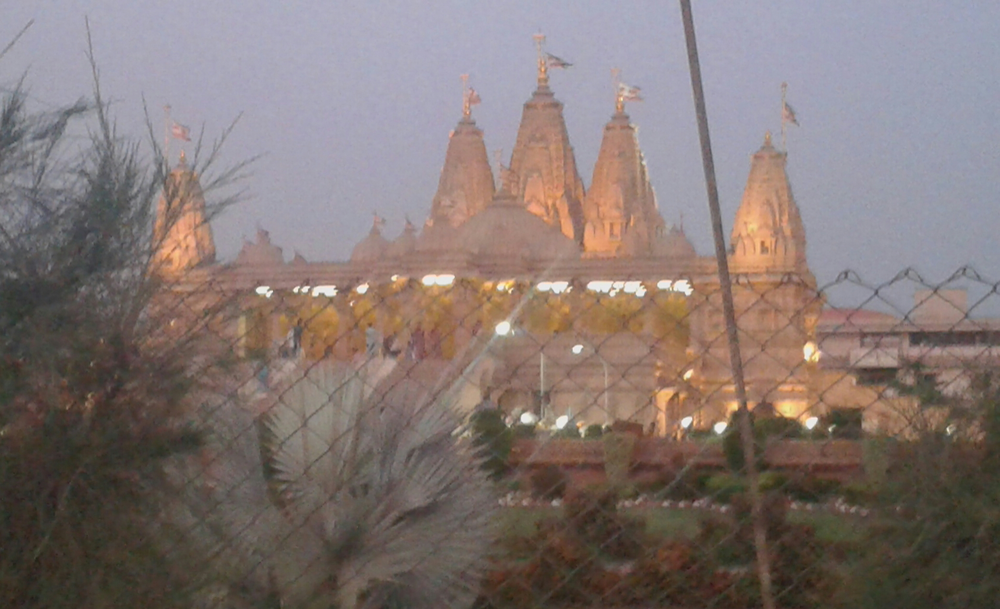
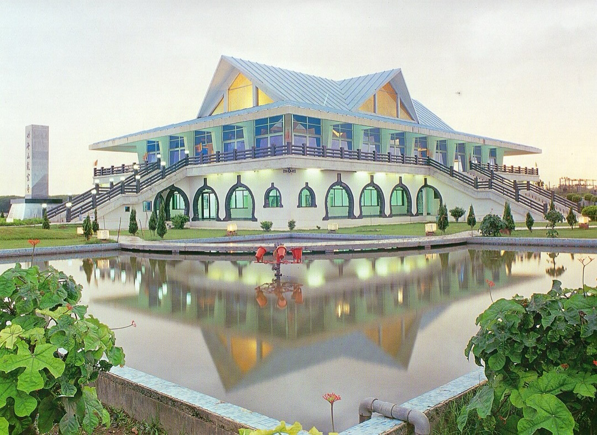
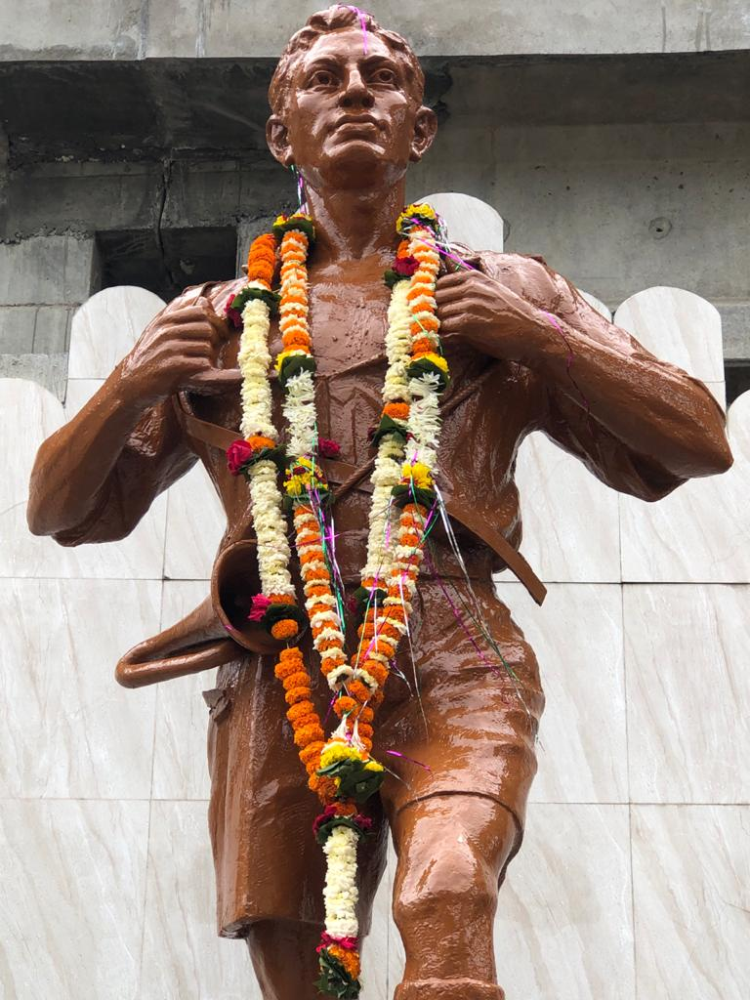
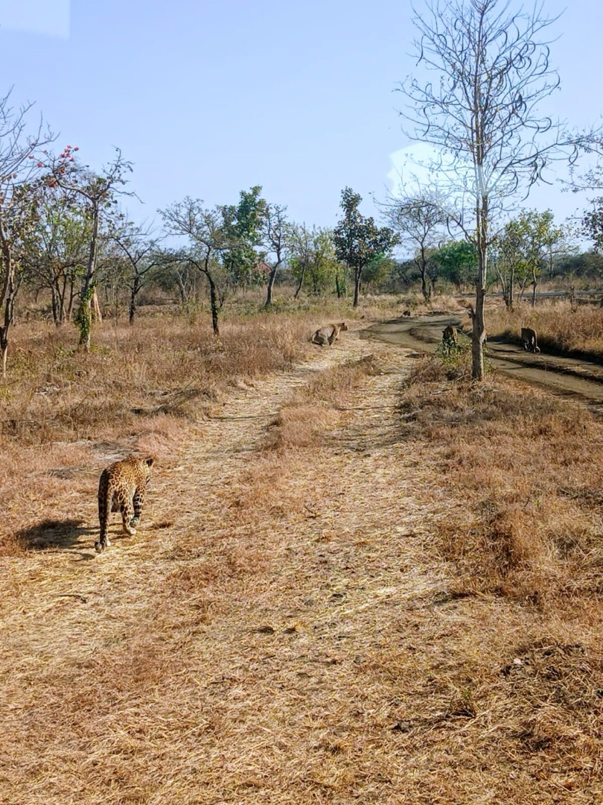

Discover historic monuments, spiritual temples, serene sunset lakes, wildlife reserves, and culinary hotspots across the historic Orange City of India.
Curated by local experts with authentic imagery and verified schedules.
Instant turn-by-turn Google Maps routes from your current location straight to any destination.
Accurate ticket pricing and complete day-by-day weekly opening hours so you never miss out.
High-resolution verified photography for every single destination hosted on our dedicated CDN.
Bookmark your favorite destinations with one tap for quick offline access during your trip.
Native Compose Multiplatform UI with dynamic light and dark theme switching.
Find places by name, category, or distance with real-time quick filter pills.
Curated iconic spots with live navigation, ticket rates, and visiting schedules.
Sacred Buddhist stupa & world-famous architectural monument. 4.0 km from Zero Mile.
View Travel Guide →Vibrant waterfront promenade, illuminated fountains, sunset views & street food.
View Travel Guide →
★ 4.9 Spiritual TemplesIntricately hand-carved pink sandstone temple with peaceful manicured gardens.
View Travel Guide →
★ 4.8 Buddhist TemplePeaceful Lotus Temple in Kamptee with tranquil zen landscaping & meditation halls.
View Travel Guide →
★ 4.7 Historical HeritageHistoric 1817 Anglo-Maratha war fortress commanding 360° panoramic city views.
View Travel Guide →
★ 4.6 Wildlife & NatureInternational zoological park featuring open forest safari trails & rich biodiversity.
View Travel Guide →From centuries-old heritage to serene lakeside sunsets and wildlife safaris.
October to March is the ideal season to explore Nagpur, featuring pleasant weather perfect for sightseeing, lakeside evenings, and wildlife safaris in Tadoba and Pench.
Yes, the Nagpur Tourism App is 100% free with no hidden charges, subscriptions, or intrusive ads.
Every place in the app includes a direct "Get Directions" action that immediately launches Google Maps with turn-by-turn navigation.
Download the official travel companion and start exploring today.